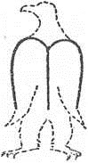

94 Sonra beşinci sözcüğün M harfinde
sıraya girdiler, öyle ki, o noktada
altın süslemeli gümüşe dönüştü Jüpiter.
97 M harfinin boşluğuna
başka ışıkların indiğini gördüm daha sonra,
oraya yerleştiler, gönül verdikleri güzelliği övdüler.
100 Tutuşmuş bir odunu sarsınca,
budalaların fal bakmaya kalktıkları
bir sürü kıvılcım saçılır ya,
103 binlerce ışık saçıldı burada da,
kimisi çok yükseğe, kimisi az yükseğe çıktı,
onları tutuşturan güneşin isteğine göre;
106 ve her biri kıpırtısız durunca yerinde,
bir kartalın başıyla boynunu oluşturduklarını
gördüm bu ateşlerin.
94/ M harfi = Dante için tek geçerli yönetim hiçimi olan monarşiyi simgeleyebilir.
99/ Güzelliği = Tanrı'yı.
105/ Tutuşturan güneş = Tanrı.
107/ Oluşturduklarını = M harfi uzayarak bir kartala (imparatorluk kartalı) dönüşür: 